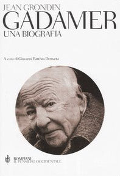
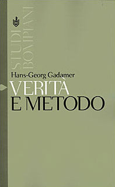
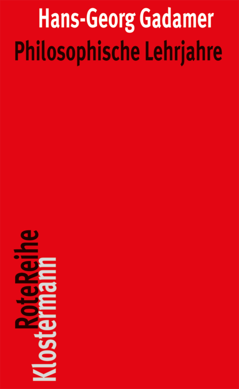
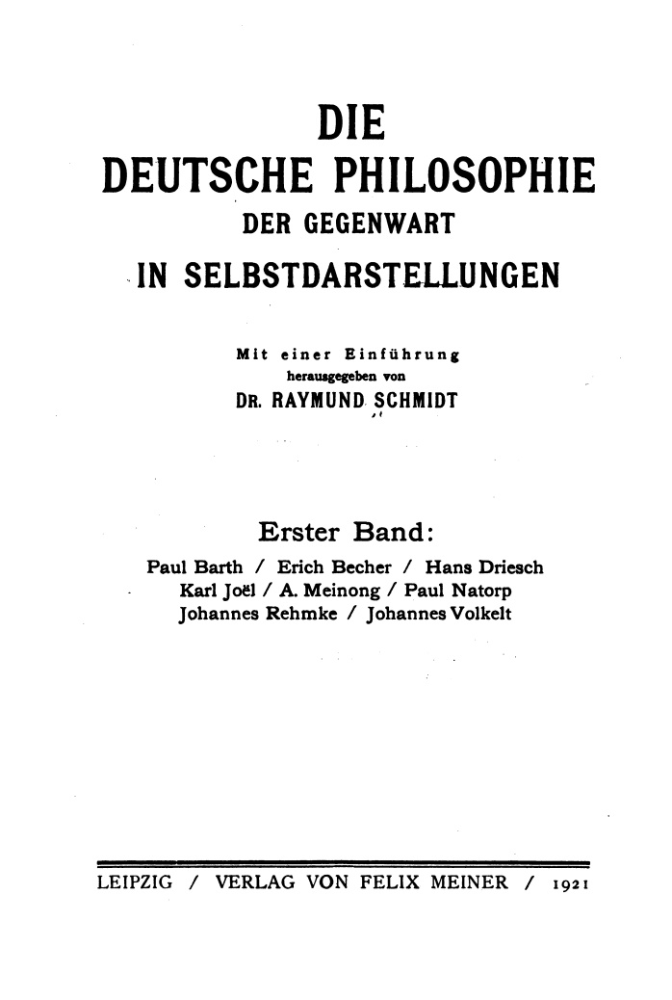
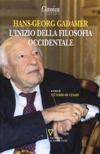
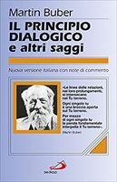

41:09 · 13 OPERE
Hans-Georg Gadamer. Una biografia.
Il filo del discorso
La biografia di Hans-Georg Gadamer scritta da Jean Grondin introduce un ritratto che intreccia libri, ricordi personali e problemi filosofici. Il relatore dichiara il proprio coinvolgimento affettivo e presenta Gadamer come un pensatore del dialogo, difficilmente riducibile alla sola opera Verità e metodo o alla dipendenza da Heidegger. L’autobiografia intellettuale riporta in primo piano Paul Natorp, la formazione platonica e una tradizione di domande condivise fra autori lontani. Gli episodi domestici ricordati dal relatore restituiscono l’immagine di un interlocutore ironico e curioso, senza diventare testimonianze indipendenti delle sue posizioni. Il confronto sui presocratici conduce al problema dell’origine: la domanda greca sul tutto viene accostata al Big Bang, in una discussione in cui il relatore racconta anche il proprio dissenso da Gadamer. La seconda parte ripercorre la carriera universitaria, il rapporto con Heidegger dopo la guerra e la polemica con Habermas. Le note distinguono le valutazioni del parlante dai dati biografici, correggendo la cronologia della poliomielite e degli studi di Habermas. Il contributo si chiude tornando al dialogo socratico e a Buber: la filosofia è proposta come esperienza viva di comprensione, non come accumulo di informazioni o adesione a un gruppo.
I libri nel discorso

Gadamer. Una biografia
Copertina: Bompiani, Il pensiero occidentale, 26 maggio 2004, 784 pagine, ISBN 9788845211119. Edizione italiana a cura di Giovanni Battista Demarta. La scheda Yale attuale riguarda la ristampa paperback 2011 della traduzione inglese, non una prima edizione del 2011.
Copertina autentica vista integralmente: fondo bianco, Jean Grondin, Gadamer. Una biografia, ritratto ovale del filosofo, Bompiani Il pensiero occidentale. Edizione di riferimento riscontrata; nessuna identificazione dell’esemplare materiale del relatore.
Gadamer, biografia di Jean Grondin, Yale e Bompiani Il pensiero occidentale espliciti.
Passaggio 0:01 ↗ · Fonti e libro ↗
Verità e metodo
Copertina: Bompiani, Studi stranieri, 4 luglio 2001, ISBN 9788845248559. Originale Wahrheit und Methode, 1960. Non confusa con l’edizione bilingue del 2000 di ISBN diverso.
Copertina autentica Bompiani vista integralmente: fondo verde oliva, Hans-Georg Gadamer, Verità e metodo; titolo bianco e nero. Il formato e l’ISBN appartengono all’edizione di riferimento del 2001.
Verità e metodo e Gadamer espliciti, con successivi richiami al rapporto fra verità e metodo.
Passaggio 3:29 ↗ · Fonti e libro ↗
Philosophische Lehrjahre (Maestri e compagni nel cammino del pensiero)
Copertina: Vittorio Klostermann, Rote Reihe 50, terza edizione 2012, 244 pagine e 14 illustrazioni, ISBN 9783465041658. Originale 1977. Traduzione italiana Maestri e compagni nel cammino del pensiero. Uno sguardo retrospettivo, Queriniana 1980, 216 pagine, ISBN 9788839918321; l’immagine è dell’edizione tedesca.
Copertina autentica vista integralmente: fondo rosso, nome Hans-Georg Gadamer bianco, Philosophische Lehrjahre nero, Klostermann Rote Reihe verticale. È una ristampa tedesca del 2012 e non la copertina della traduzione italiana.
Philosophische Lehrjahre, Klostermann e carattere autobiografico espliciti; titolo italiano riscontrato separatamente.
Passaggio 7:05 ↗ · Fonti e libro ↗
Selbstdarstellung (Paul Natorp)
Frontespizio della raccolta, 1921: In Die deutsche Philosophie der Gegenwart in Selbstdarstellungen, a cura di Raymund Schmidt, primo volume, Felix Meiner, Leipzig 1921, pp. 151–176. Immagine del frontespizio del volume collettivo, non copertina esterna di un volume autonomo di Natorp.
Frontespizio autentico del volume collettivo del 1921, reso integralmente dalla prima pagina del PDF archivistico: Raymund Schmidt, Erster Band, otto autori fra cui Paul Natorp, Leipzig, Felix Meiner, 1921. Non è una copertina esterna del contributo di Natorp. La miniatura precedente resta conservata; questa riproduzione 698 × 1038 permette una lettura più chiara.
Selbstdarstellung di Natorp descritta come schizzo autobiografico con epigrafe latina; il 1920 detto nel video è corretto bibliograficamente al 1921.
Passaggio 9:43 ↗ · Fonti e libro ↗
Critica della ragione pura
Copertina: Adelphi · Gli Adelphi 85, 1995 · traduzione e cura Giorgio Colli
Immagine autentica dell’opera, controllata visivamente; l’edizione di riferimento non è attribuita al filmato.
Critica della ragione pura e l’epigrafe tratta da Bacon esplicite.
Passaggio 10:11 ↗ · Fonti e libro ↗
Metafisiche del mondo
Copertina: Copertina riprodotta nella recensione di Domenico Conversa
Metafisiche del mondo esplicito nel ricordo dei colloqui personali.
Passaggio 12:32 ↗ · Fonti e libro ↗
Dove si nasconde la salute
Copertina: Raffaello Cortina, gennaio 1994, 208 pagine, ISBN 9788870782899. Originale tedesco Über die Verborgenheit der Gesundheit, 1993; il titolo inglese The Enigma of Health spiega la variante pronunciata, senza farne un distinto libro italiano.
Copertina autentica Cortina vista integralmente: fondo grigio, Hans-Georg Gadamer e Dove si nasconde la salute in alto, figura della Venere botticelliana in basso a destra, marchio editoriale sul lato sinistro.
Libro di Gadamer sulla salute, denominato l’enigma della salute; normalizzato al titolo italiano verificato Dove si nasconde la salute.
Passaggio 14:53 ↗ · Fonti e libro ↗
Frammenti
Copertina: BUR · a cura di Francesco Fronterotta, testo greco a fronte, 2013
Immagine autentica dell’opera, controllata visivamente; l’edizione di riferimento non è attribuita al filmato.
Eraclito, fulmine e Der Blitz steuert alles espliciti; richiamo al frammento tradizionalmente numerato B64, non a una specifica edizione della raccolta.
Passaggio 19:19 ↗ · Fonti e libro ↗
Bassezza e profondità
Copertina: Editori Riuniti · Gli studi · traduzione di Federica Giardini
Copertina autentica Editori Riuniti: nell’immagine il sottotitolo è Saggi su Heidegger, al plurale; il catalogo consultato registra Saggio su Heidegger e l’anno 1993. La voce usa il titolo comune Bassezza e profondità e non attribuisce questa stampa al filmato.
Bassezza e profondità di Mascolo esplicito.
Passaggio 27:05 ↗ · Fonti e libro ↗
Quaderni neri (Schwarze Hefte)
Copertina di un volume del corpus: GA 94: Immagine di riferimento: Gesamtausgabe 94, Überlegungen II–VI (Schwarze Hefte 1931–1938), a cura di Peter Trawny, Klostermann 2014, VI e 536 pagine, ISBN 9783465038153. La voce riguarda il corpus, la cui pubblicazione è iniziata nel 2014; non tutti i quaderni sono contenuti in GA 94.
Copertina autentica Klostermann vista integralmente: fondo grigio, Martin Heidegger, Gesamtausgabe in blu, Band 94 e titolo Überlegungen II–VI, Schwarze Hefte 1931–1938. Rappresenta soltanto il primo volume pubblicato del corpus; non si attribuisce al relatore la citazione specifica di GA 94.
Quaderni neri espliciti, senza indicazione di un volume particolare del corpus.
Passaggio 30:21 ↗ · Fonti e libro ↗
L’inizio della filosofia occidentale
Identificazione probabile
Copertina: Guerini e Associati, Classica. I maestri, 22 maggio 2014, 150 pagine, ISBN 9788862505161, a cura di Vittorio De Cesare. Prima edizione 1993; lezioni napoletane 11–22 gennaio 1988. Titolo non pronunciato, identificazione probabile.
Copertina autentica vista integralmente: fotografia di Gadamer seduto, titolo L’inizio della filosofia occidentale, Classica in alto, Vittorio De Cesare e Guerini e Associati in basso. L’immagine non appartiene all’opera omonima di Martin Heidegger.
Breve introduzione ai presocratici di Gadamer, titolo non pronunciato; identificazione probabile con L’inizio della filosofia occidentale.
Passaggio 35:15 ↗ · Fonti e libro ↗
Io e Tu (Ich und Du)
Copertina della raccolta che contiene Io e Tu: Saggio del 1923. Immagine della raccolta Il principio dialogico e altri saggi, San Paolo, terza edizione luglio 2014, 336 pagine, ISBN 9788821570476. Il titolo della raccolta non viene sostituito al titolo del singolo saggio pronunciato.
Copertina autentica San Paolo vista integralmente: fondo lilla, Martin Buber, Il principio dialogico e altri saggi, riquadro con ritratto e fasce arancioni. È la raccolta contenente Io e Tu, non una edizione autonoma del saggio. Risoluzione nativa 129 × 200 pixel, leggibile e senza ingrandimenti inventati.
Martin Buber e Io e Tu espliciti, normalizzati dagli errori fonetici dell’ASR.
Passaggio 37:39 ↗ · Fonti e libro ↗
Faust
Copertina: BUR / Rizzoli · 2005
Immagine autentica dell’opera, controllata visivamente; l’edizione di riferimento non è attribuita al filmato.
Allusione alla teoria grigia e al verde albero della vita nel Faust; il testo non è presentato come citazione italiana letterale.
Passaggio 40:17 ↗ · Fonti e libro ↗Minutaggi ricavati da testi automatici, da riascoltare. Le identificazioni probabili sono segnalate accanto ai libri.